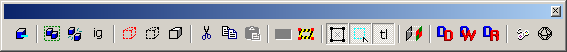

Toolbars
The Hammer toolbars can be “torn off,” moved around the screen and “docked” onto the window edges to create a layout that will work for you. The MapTools, MapOperations, and MapView toolbars can be docked along the top and bottom of the screen, as well as the left and right sides. The Texture Bar, Filter Control Bar, and New Objects Bar can be docked along the left and right edges only. The Status Bar cannot be moved from its position at the bottom of the window.
To tear off a toolbar, simply drag it off the window edge into its new location. Toolbars are docked by dragging it onto the window edge where you’d like it to be placed.
For information about Hammer's Toolbars, click on the following links:
Map Tools - Used to edit and create new geometry. |
 |
Map Operations - Used to control visibility and selection of objects. |
|  |
Map View - Used to edit and create new geometry. |
 |
Textures - Selection and browsing of materials. |
 |
Filter Control - Listing and editing of object VisGroups. |
New Objects - Contextual dialog for choosing placed solids, entities and prefabs. |
Selection Modes - Used to control how objects can be selected. |
 |
Status Bar - The informational bar at the bottom of the Hammer Editor window. |
© 2004 Valve Corporation. All rights reserved. Valve, the Valve logo, Half-Life, the Half-Life logo, the Lambda logo, Steam, the Steam logo, Team Fortress, the Team Fortress logo, Opposing Force, Day of Defeat, the Day of Defeat logo, Counter-Strike, the Counter-Strike logo, Source, the Source logo, Hammer and Counter-Strike: Condition Zero are trademarks and/or registered trademarks of Valve Corporation. Microsoft and Visual Studio are trademarks and/or registered trademarks of Microsoft Corporation. All other trademarks are property of their respective owners.